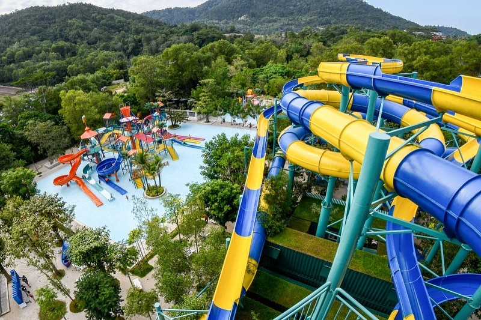

Home
Welcome to Penang explore the beauty, culture, and food of this vibrant island all in one place Often called the Pearl of the Orient.
This vibrant island blends centuries of history, colorful street art, and
world‑famous cuisine. From the colonial charm of George Town’s UNESCO
heritage streets to the breathtaking views atop Penang Hill, every corner
offers a unique story. Whether you’re here for culture, food, or adventure,
Penang promises an unforgettable experience.
About
Penang is known as the Pearl of the Orient, rich in history, culture, and natural beauty.Penang, often called the Pearl of the Orient, is a vibrant island
that blends history, culture, and natural beauty. Its capital, George Town, is a UNESCO World Heritage Site filled with colonial architecture, colorful street art,
and bustling markets. Penang is also famous for its diverse communities Malay,Chinese, Indian, and Peranakan each contributing to the island’s festivals,
traditions, and cuisine. From the serene beaches of Batu Ferringhi to the lively night bazaars, Penang offers a unique mix of old‑world charm and modern attractions.
Package-Plan your trip With Us
- Heritage Tours — explore George Town’s UNESCO sites

- Food Trails — taste Penang’s world‑famous street food

- Island Adventures — beaches, hills, and nature escapes

Choose from our tourism packages heritage tours, food trails, and island adventures.